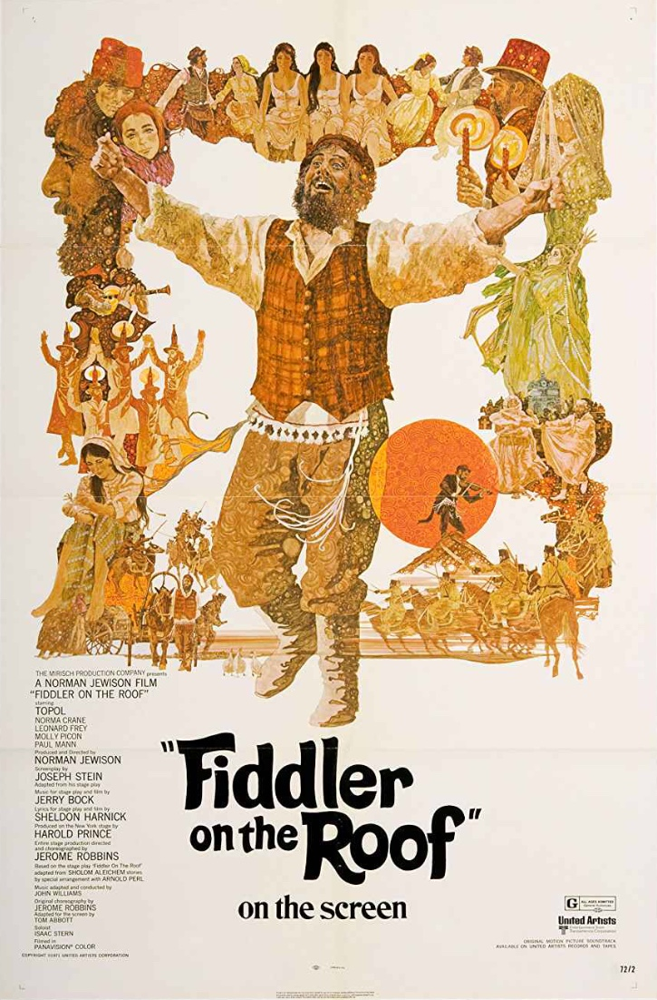

Fiddler on the Roof
44th Academy Awards
(Oscars 1972)
8 Nominations, 3 Awards
| Nominations | ||
|---|---|---|
| Category | Nominees | Result |
| Best Picture | Norman Jewison | Nominated |
| Actor | Topol | Nominated |
| Actor in a Supporting Role | Leonard Frey | Nominated |
| Directing | Norman Jewison | Nominated |
| Cinematography | Oswald Morris | Won |
| Art Direction | Michael Stringer, Peter Lamont, and Robert Boyle | Nominated |
| Sound | David Hildyard and Gordon K. McCallum | Won |
| Music (Scoring: Adaptation and Original Song Score) | John Williams | Won |